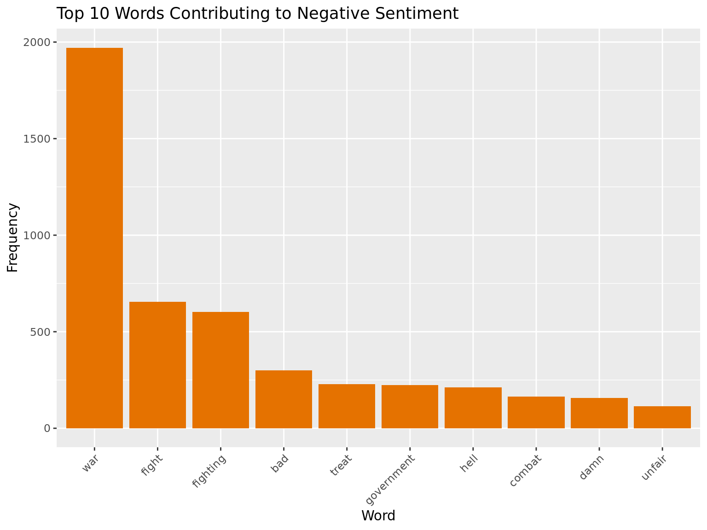
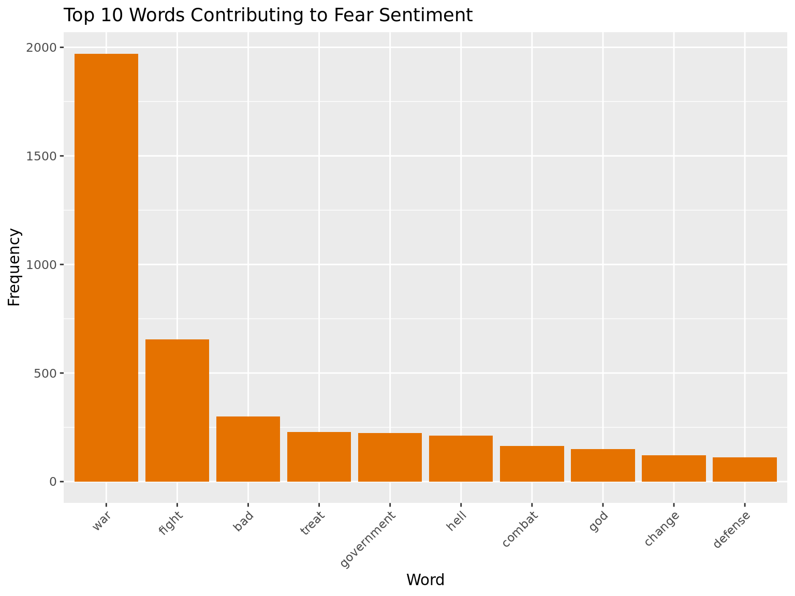
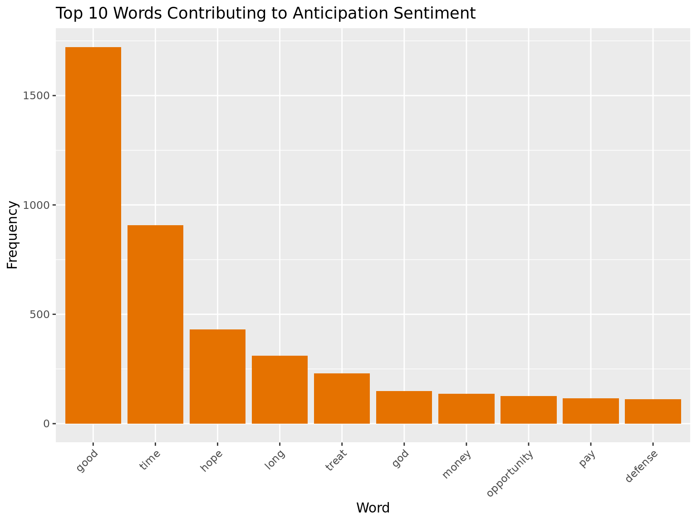
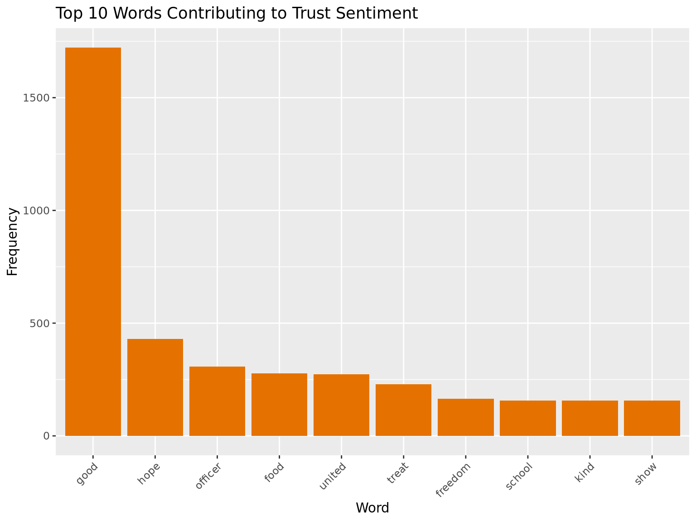
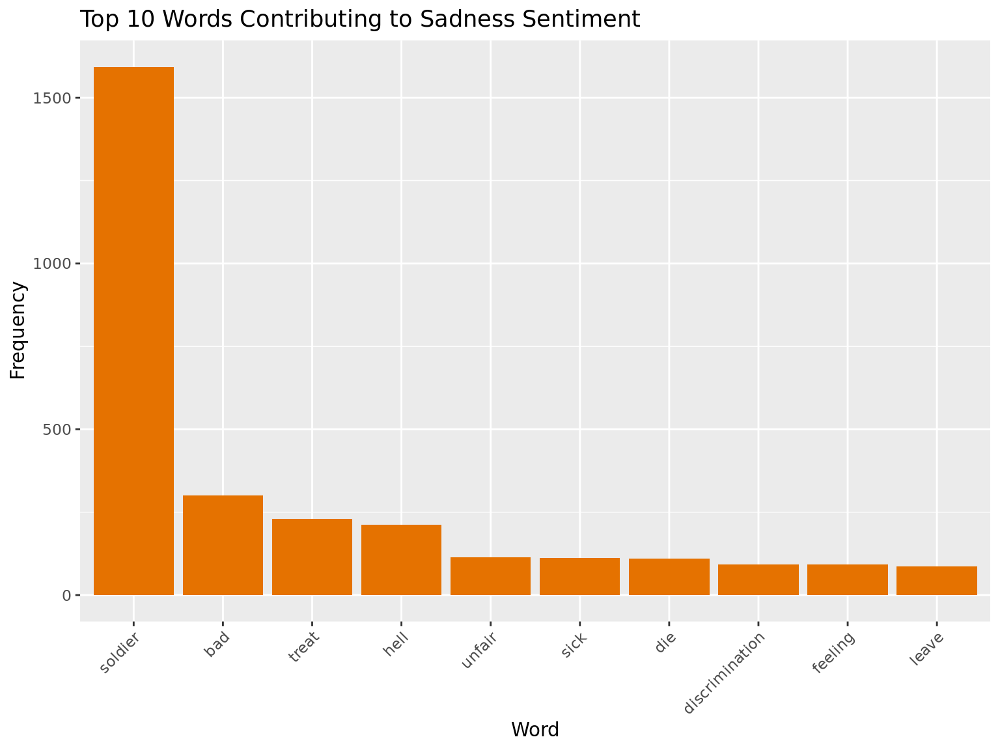
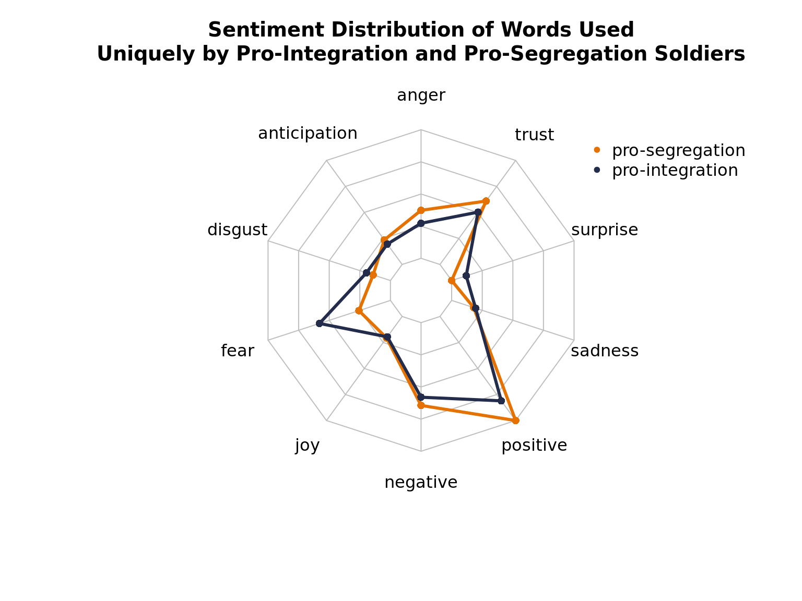

Sentiment Analysis of White & Black Soldiers
This page provides sentiment of race relations from Survey 32.
R sentiment analysis race relationsSentiment Analysis
Removing Racially-Biased Words
Words referring to race are biased within the sentiment libraries. For example, within the NRC lexicon, "black" and "negro" are associated with the negative and sadness sentiments, while "white" is associated with the anticipation, joy, positive, and trust sentiments.
| word | sentiment |
|---|---|
| black | negative |
| black | sadness |
| negro | negative |
| negro | sadness |
| white | anticipation |
| white | joy |
| white | positive |
| white | trust |
These words are removed from the text before sentiments are analyzed to remove racial bias.
NRC Lexicon
The NRC lexicon uses a dictionary to associates a word with the following sentiments: positive, negative, anger, anticipation, disgust, fear, joy, sadness, surprise, and trust. The sentiment of a body of text equals the number of words contributing to that sentiment. A word may contribute to multiple sentiments, yet each word is weighted equally in its contribution.
What words primarily contribute to each sentiment?






Exploring different sentiment distributions across groups.
Since black and white soliders are largely dicussing similar topics related to the war there isn't much difference between the distribution of average sentiments. However, black soliders tend to be more angry, more fearful, and less positive in their responses than white soldiers.
In their responses to whether army outfits should be integrated, white soldiers who thought the outfits should remain segregated tended to show more anger and anticipation in their repsonses. Perhaps unexpectedly, white soldiers in favor of desegregating outfits were signficantly more fearful. Also, it's important to note that a very small percentage of soldiers were in favor of desegregating outfits, so the average sentiments are more sensitive to small changes in a single repsonse.
Unique Terms
Since Survey 32 is generally about the war and experience within the military, many soldiers write about the same topics and use the same words, which adds noise and makes it harder to differentiate the sentiment distribution between different groups. In this section, we look at words that are used uniquely by certain groups.
The wordclouds below show the words used uniquely by black and white soldiers, in orange and navy blue, respectively.
What words are used uniquely across opinion on outfit integration? The wordclouds below show the words used uniquely by pro-segregation and pro-integration white soldiers, in orange and navy blue, respectively.
This plot was created from the words used uniquely by each group, so the words used to evaluate sentiment for black soldiers were never used by white soldiers and vice versa. The unique words of black soldiers corresponded with more fear, disgust, anger, and sadness than those of white soldiers.

This plot reveals an interestig pattern because it is perhaps unexpected that pro-segregation white soldiers would be more trusting, more positive, and less fearful than pro-integration white soldiers. It is important to remember however that such a small percentage of white soldiers supported desegregation, so the average is easily influenced by a single response. The spike in fear by pro-integration soliders is very peculiar, and should be looked into more deeply.
This plot looks at the difference in word usage between black and white soldiers. Basically, it takes the proportion the word is used by black soldiers and subtracts it by the proportion that the word is used by white soldiers. Positive values indicate words that are used more by black soldiers, while negative values indicate words that are used more by white soldiers.
Arguably the most important takeaway from this chart is that black soldiers are discussing race more often than their white counterparts. For black soldiers in the military during WW2, their race was a central to their experience and was at the forefront of their minds in a way that it was not for white soldiers.